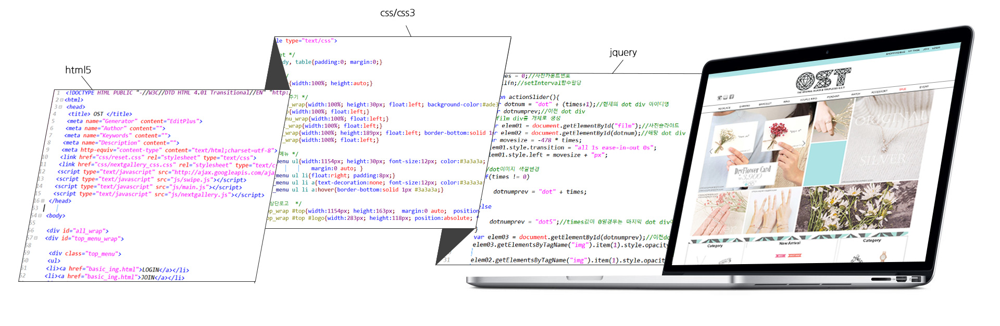
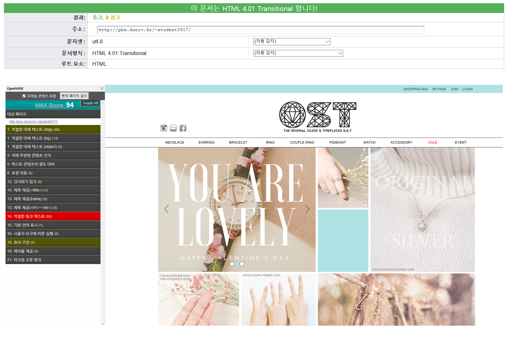

Website Renewal
'OST'
사용자의 편의성을 고려한 감각적인 쥬얼리샵
인스타그램은 약 4800명, 페이스북은 약 1만 5천명이상의 팔로우 수를 가진 SNS를 운영함에도 불구하고Main Color 1
#ade3e5
Main Color 2
#b1ded9
Sub Color
#3a3a3a
브랜드 OST의 상징 컬러인 Mint색을 주로하여 아기자기하며 세련된 느낌을 살리려 하였습니다.
html5, css/css3, jquery를 직접 코딩하여 제작하였습니다.
사용자의 편의성을 고려하여 마우스를 롤오버 했을시
해당 아이템의 착용된 사진을 볼 수 있도록 배치하였습니다.
주 타겟층인 10대 ~ 20대의 취향을 고려하여
아기자기하되 지저분하지 않고 세련된 디자인을 하려고 노력하였습니다.
W3C의 validator와 FireFox의 OpenWAX를 사용하여 검사하였습니다.
